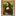

How to make VISTA style toolbar with CSS
Add New
Check Mail
Statistic
My Pictures
Help
VISTA style toolbar with CSS
This is example of VISTA style toolbar.
Read full article.
 Statistic
Statistic Help
Help